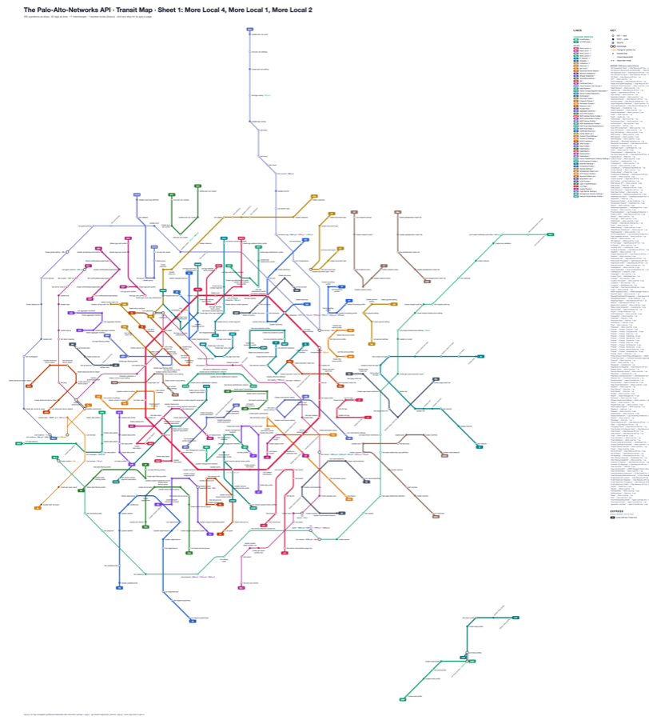
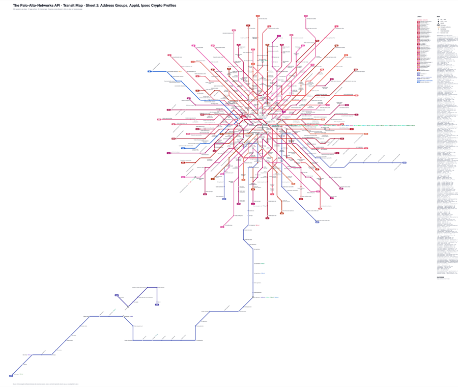
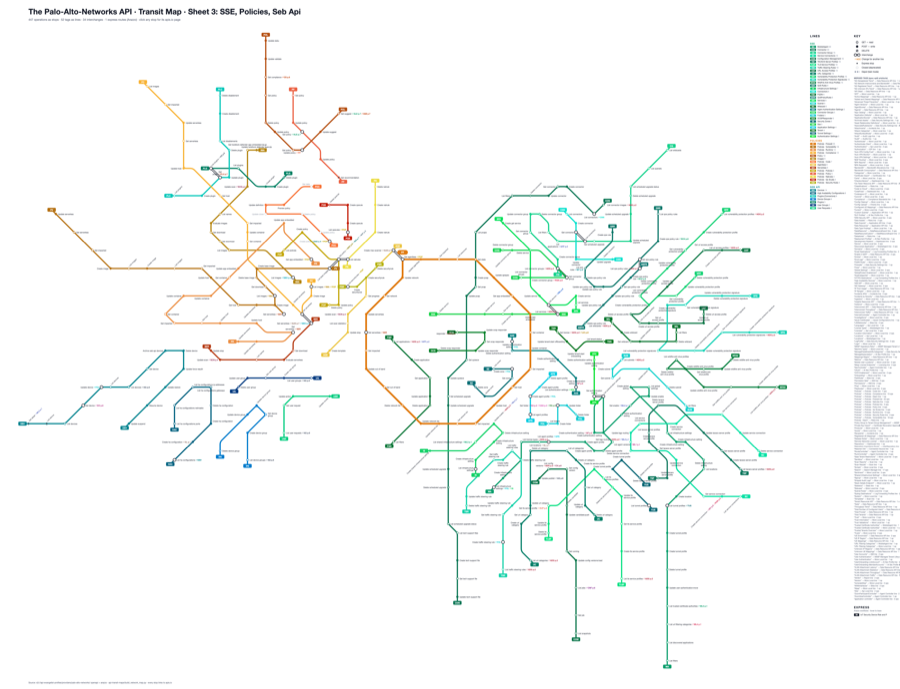
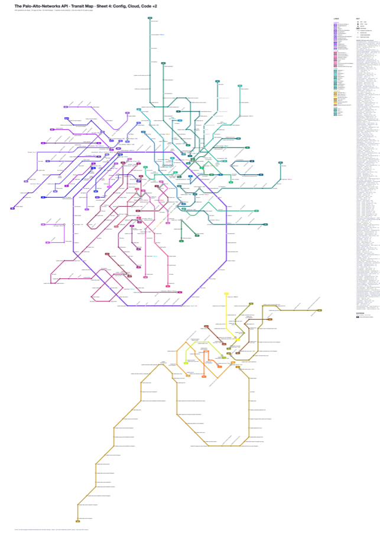
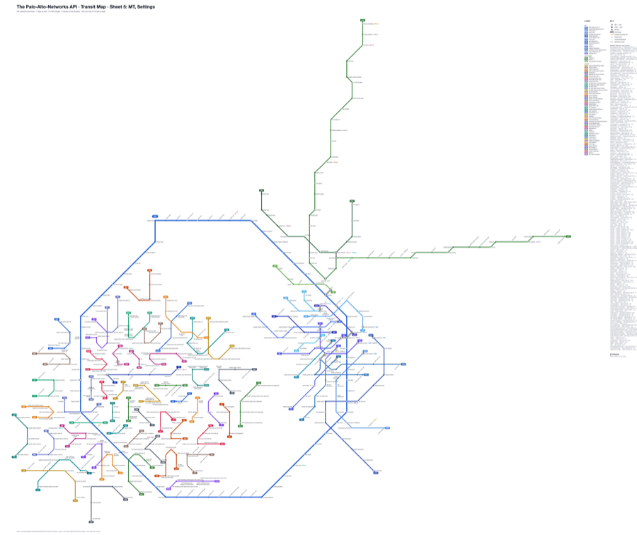
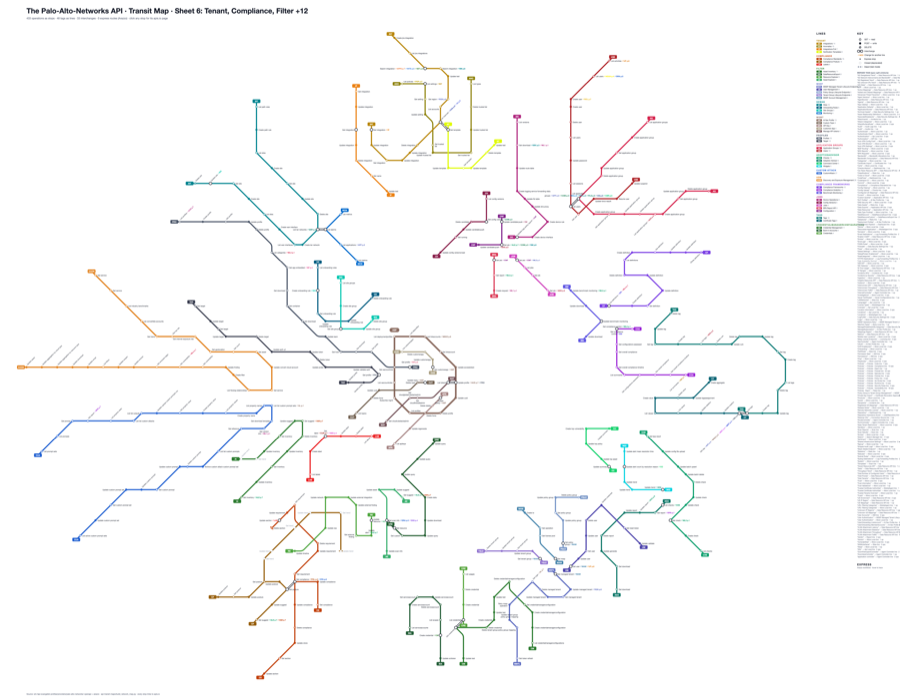
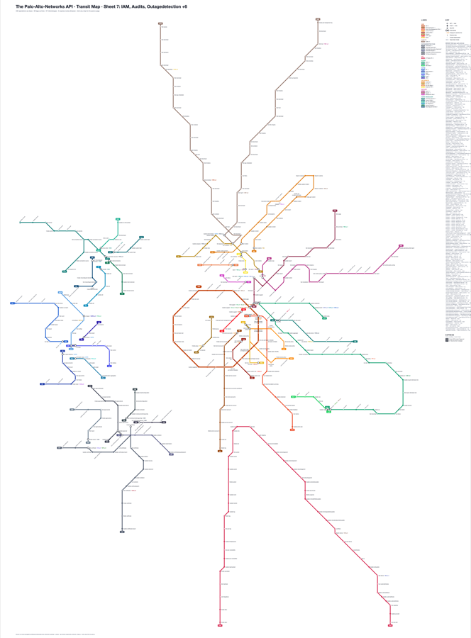
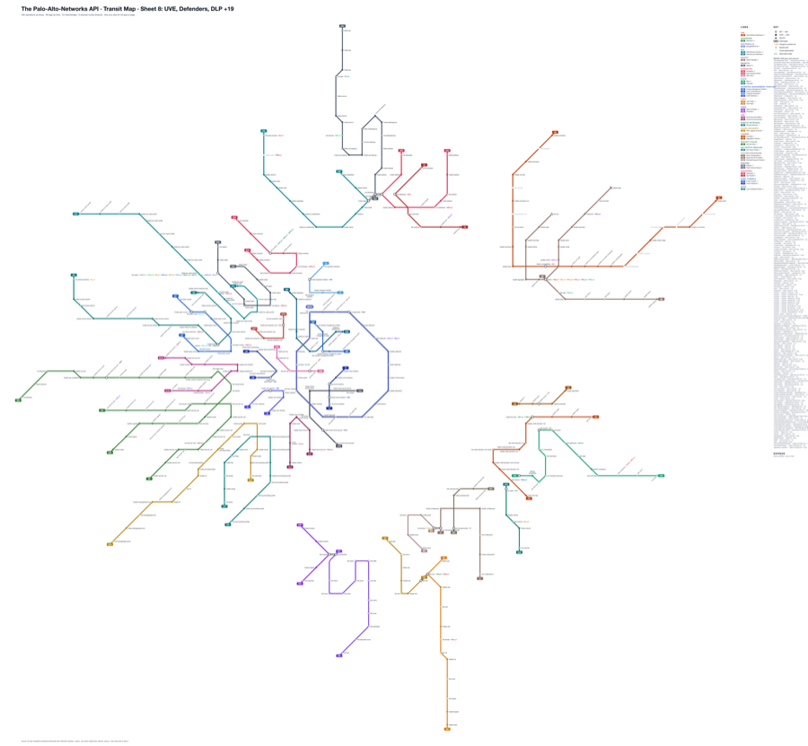

p.1 More Local 4, More Local 1, More Local 2
450 operations · 62 lines
- More
Interchanges to p.2 (2), p.3 (10), p.4 (5), p.5 (6), p.6 (13), p.7 (5), p.8 (3)
3506 operations on 8 sheets · products that interchange most share a sheet · on each sheet, "⇄CODE p.N" means change for that line on page N · every stop links to apis.io

450 operations · 62 lines
Interchanges to p.2 (2), p.3 (10), p.4 (5), p.5 (6), p.6 (13), p.7 (5), p.8 (3)

450 operations · 41 lines
Interchanges to p.1 (2), p.3 (26), p.4 (1), p.5 (3), p.6 (8), p.7 (2), p.8 (7)

447 operations · 52 lines
Interchanges to p.1 (10), p.2 (26), p.4 (8), p.6 (12), p.7 (7), p.8 (9)

446 operations · 54 lines
Interchanges to p.1 (5), p.2 (1), p.3 (8), p.5 (4), p.6 (6), p.7 (4), p.8 (15)

445 operations · 71 lines
Interchanges to p.1 (6), p.2 (3), p.4 (4), p.6 (5), p.7 (3), p.8 (7)

433 operations · 48 lines
Interchanges to p.1 (13), p.2 (8), p.3 (12), p.4 (6), p.5 (5), p.7 (16), p.8 (12)

430 operations · 38 lines
Interchanges to p.1 (5), p.2 (2), p.3 (7), p.4 (4), p.5 (3), p.6 (16), p.8 (8)

405 operations · 38 lines
Interchanges to p.1 (3), p.2 (7), p.3 (9), p.4 (15), p.5 (7), p.6 (12), p.7 (8)